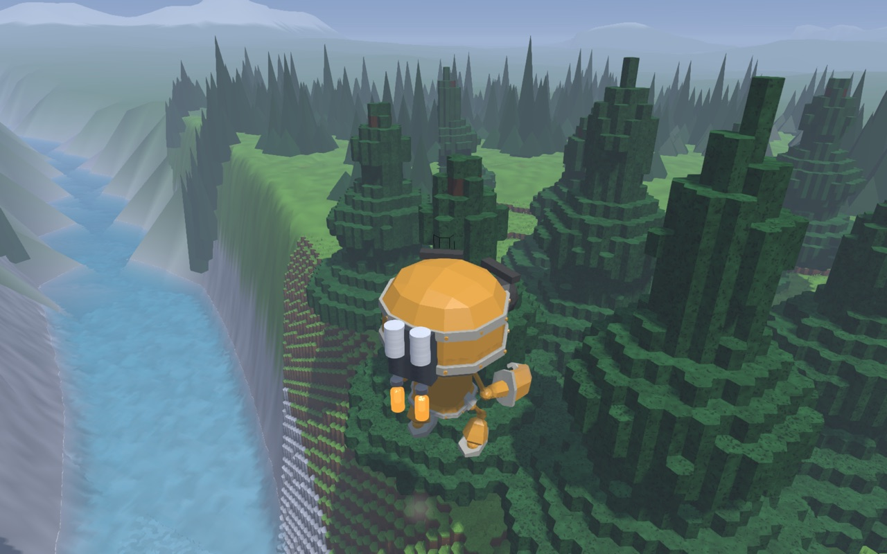
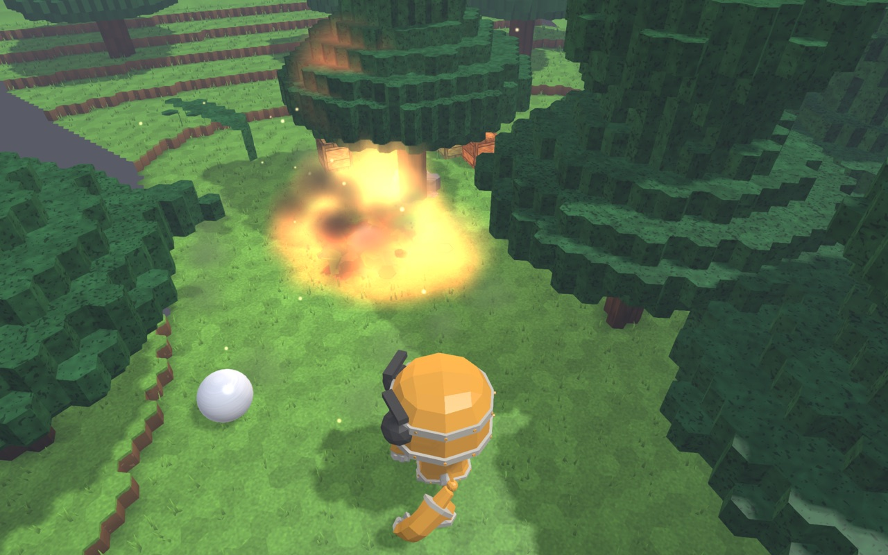

What you can do

Play together
Up to six players share one world on the same network. One opens their world; the others see it on the radar in the Multiplayer menu and click to join.

Build machines
Start with a core block and add to it: 36 parts, from wheels, wings and jet engines to hulls, pistons, gears and a steam engine. Mirror mode builds both sides at once, and every part has a short scene that shows how it works. Gears mesh where you place them, and their teeth snap when a train is driven too hard.

Drive
Cars and trucks with real suspension, an engine and a gearbox. Walk up to one and get in.

Fly
Three quick jumps put on a jetpack. Hold Jump to climb and steer, let go to glide on the wind. It refuels on the ground. Or build a plane: its wings lift until they stall, as real ones do.

Dig and blast
The world is made of blocks: dig tunnels, blast craters, bring down trees, towers and ruins. What breaks shatters into pieces you can pick up, and what is lighter than water floats. Blocks go on anything, too: build on a crate, a car or a machine and it carries them.

See the physics
Smaller scenes outside the sandbox go from atoms and light to orbits and a black hole, each with an explanation.
In the sandbox you can also dig and shape the ground, place and break blocks, glue things together, set fires, blow things up, and drop your own 3D models (.glb files) onto the window: pick one up and it becomes an item you can hold, swing, put down or drop.
Eight machines, ready to go
No building needed. Pick one in the inventory's Vehicles tab and place it: it lands where you aim, with you in the seat.
Rally buggy
A light buggy on sprung back wheels.
6x6 truck
Six driven wheels, a steered front axle and a bed.
Jet plane
Two jets. Hold the throttle: it takes off and climbs.
Prop plane
A propeller under the nose. It takes off and climbs the same way.
Light tank
Turns on the spot on its tracks. Its turret fires shells.
Heavy tank
A wide hull on tracks and a turret with two cannons.
Strider
Four cranks walk two feet a side.
Hexapod
Six spinning legs in a tripod gait.
They float and fly for real
Water holds up each part by what it displaces, so a hull floats and a mast adds nothing. Wings lift until they stall at 15 degrees. A steam engine takes five seconds to build its pressure.
They break
A hard hit knocks parts off, and when the core block goes, everything that hung on it comes apart. Bombs, cannons and a flamethrower are among the parts.
They get back up
A machine left lying on its side or roof for three seconds stands itself upright again. A wreck that has lost its core stays a wreck.
Starting it the first time
The game is made by a hobbyist and is not registered with Apple, Microsoft or Google, so every system warns about it the first time you open it. You only have to do this once.
Mac
- Open the downloaded file and drag Physics Playground onto the Applications folder beside it.
- Open it from Applications. macOS says it could not verify the app. Click Done.
- Open System Settings > Privacy & Security, scroll down, and click Open Anyway next to Physics Playground.
On macOS 14 or earlier: right-click the app, choose Open, then Open.
Needs macOS 11 or later. Works on Apple Silicon and Intel Macs.
Windows
- Run the downloaded PhysicsPlayground-Setup.exe.
- If Windows says "Windows protected your PC", click More info, then Run anyway.
- Start the game from the Start menu or the desktop shortcut.
It installs for you only and needs no administrator password.
Needs Windows 10 or 11, 64-bit, and a graphics driver that offers OpenGL 4.1: almost any PC from the last ten years with its graphics driver installed.
Android
- Open the downloaded PhysicsPlayground-android.apk (from the notification, or the Files app).
- Android asks to allow installing from this source: allow it, then tap Install. If Play Protect says it does not know the app, choose Install anyway.
- Open it and tap Play. Hold the phone sideways: the left thumb walks on the arrows (double-tap forward to run; Options has a joystick instead), the right thumb drags to look and taps to use. Buttons: Fire, Jump, Use, Build, Place, Items, Menu; More holds everything else, Hide clears the panels.
Needs Android 8 or later with OpenGL ES 3.0 (any phone or tablet from the last eight years). It starts in the Low performance mode; Options > Performance raises it on a fast phone. It plays with Macs, PCs and other phones on the same Wi-Fi.
iPhone and iPad
Not on the App Store. If you have a Mac with Xcode, the source builds for iPhone and iPad (see ios/README.md) and runs on your own devices.
Joining a game: the iPhone finds hosts by their address (shown on the host's Host tab).
In the game, choose Play. A short tutorial starts the first time, and there are more for gears, pneumatics, building machines, mechanisms, boats and planes, and siege. F1 shows the controls, Esc opens the menu. The smaller physics scenes are under All scenes: choose a scale.
Playing together
To host
Choose Multiplayer in the main menu (or press Esc in the sandbox), then Open to LAN on the Host tab. Your world is now everyone's.
Allow the game through the firewall (Windows) or allow it to use the local network (Mac) when asked, or nobody will be able to see you.
To join
Choose Multiplayer: the radar shows every world open on your network as it sweeps past it. Click the host's blip. For a host on another network, type their address on the "Join by address" tab.
Your own world is saved when you join and comes back when you leave. You keep your own inventory.

Everyone needs the same version. Friends who are not on your network can join by address through a free virtual network such as Tailscale or ZeroTier, or if the host forwards UDP port 47815.
Good to know
Your saves
Settings, your world and your levels are kept in your own user folder, so a newer version picks them up and uninstalling leaves them alone.
- Mac:
~/Library/Application Support/Physics Playground - Windows:
%APPDATA%\Physics Playground
Other downloads
- Mac installer (.dmg)
- Windows installer (.exe)
- Android app (.apk)
- Without an installer: Mac zip, Windows zip
- Earlier versions
To remove the game: on a Mac, drag it from Applications to the Bin; on Windows, uninstall it under Installed apps; on Android, hold its icon and choose Uninstall.